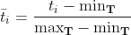
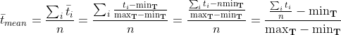

|
Tags:
Categories:
|
There are several tasks in this assignment.
In each task, you are to
Task 1Twin Primes A prime number is a natural number greater than 1 that is only divisible by 1 and itself. A twin prime is one of a pair of prime numbers with a difference of 2. For example, 41 and 43 are twin primes. Define the method twinPrimes which takes in an integer n and returns an array of increasing twin primes from 0 until n inclusive. static int[] twinPrimes(int n)
Click here to submit to CodeCrunch. |
Task 2Greatest Common Divisor Define the method gcd that takes in two positive integers m and n and returns the greatest common divisor using the Euclidean Algorithm. static int gcd(int m, int n)
Click here to submit to CodeCrunch. |
Task 3Counting Repeats Define the method countRepeats that takes in an integer array of digits 0 to 9 and returns the number of occurrences of adjacent repeated digits. You may assume that there are at least three elements in the array. static long countRepeats(int... array) For example,
The following is a sample run of the program. User input is underlined.
Click here to submit to CodeCrunch. |
Task 4Normalized Mean Given a list T of n integers ti, the normalized value of each ti is defined as where minT and maxT represent the minimum and maximum values among all n values in T. For example, the list of values {1,2,3,4,5} upon normalizing will become {0,0.25,0.5,0.75,1} since minT = 1 and maxT=5.With the set of normalized values generated, the normalized mean can be easily computed to be $0.5$. Notice from the above that finding the normalized mean requires values in the list to be accessed twice: once for finding the maximum/minimum, and a second time to compute each normalized value and finding the mean. Alternatively, we can re-expressed the normalized mean as  This way need to only access each element in the list exactly once. Define the method normalizedMean that takes in a Stream of Integer elements and returns the normalized mean static double normalizedMean(Stream<Integer> stream)
Click here to submit to CodeCrunch. |